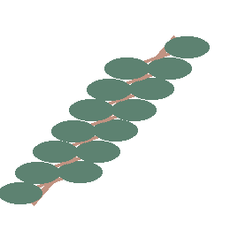

别让课程作业停在文件夹里：把它改造成作品集，只需要四步
很多大学生第一次准备实习简历时，都会遇到同一个问题：课程学了不少，作业也做了很多，但真正填写“项目经历”时，还是觉得自己没有作品。
问题往往不在于没有做过事情，而在于过去的作业只回答了“老师要求交什么”，没有回答招聘者更关心的三个问题：你发现了什么问题、做出了什么判断、最终留下了什么结果。
一份普通课程作业，只要保留真实过程，也可以被重新整理成有说服力的作品。
FIELD OBSERVATION
不要从改字体、换配色开始。先用一句话说明这份作业到底解决了什么问题。
例如，“完成一个校园二手交易小程序原型”描述的是交付物；“降低学生发布闲置物品时的信息填写成本”才描述了问题。前者只能证明你做完了作业，后者才让人看见你为什么这样设计。
整理时，可以先回答下面三个问题：
OBSERVATION LOG / 观点索引
谁在什么场景里遇到了阻碍？
这个阻碍为什么值得被解决？
你负责的是完整项目，还是其中一个明确环节？
FIELD OBSERVATION
作品集不是最终截图的集合，而是一条可以被复盘的决策链。
OBSERVATION LOG / 逻辑路径
保留最初的需求或任务约束；
展示你如何筛选信息并确定重点；
说明中间出现过的分歧、失败或取舍；
用最终方案回应最初的问题。
如果一张页面、一个模型或一段代码无法说明“为什么这样做”，它在作品集中就只是一张结果图。真正有价值的内容，是结果背后的判断过程。
FIELD NOTE / 证据摘录作品集不需要证明你从未犯错，它需要证明你能发现问题、解释选择，并继续把事情推进下去。
FIELD OBSERVATION
SPECIMEN
任务描述“负责访谈、原型设计和汇报”只是工作清单，读者仍然不知道这些动作产生了什么价值。
SPECIMEN
结果表达可以改成：“通过访谈发现发布流程中最容易中断的三个步骤，据此合并重复字段，并在原型测试后调整信息层级。”
即使课程项目没有真实商业数据，也可以诚实呈现：
OBSERVATION LOG / 要点拆解
方案前后发生了什么变化；
哪项判断来自用户反馈或测试；
哪些部分仍然只是待验证假设；
如果再做一次，你会优先补充什么证据。
FIELD OBSERVATION
一份适合快速阅读的课程项目，可以压缩为四个页面：
OBSERVATION LOG / 观点索引
项目背景与核心问题；
关键洞察与决策依据；
方案如何逐步形成；
最终结果、反思与下一步。
每一页只承担一个阅读任务。标题直接说结论，图片负责提供证据，正文负责解释必要的上下文。不要让装饰抢走信息，也不要把所有过程都塞进一张长图。
课程作业和求职作品之间，并不存在一道必须靠“更大项目”才能跨过的门槛。真正的差别，是你能否把完成任务的过程，整理成一段可信、清楚、可以继续追问的能力证据。
从今天开始，不妨先挑一份自己最熟悉的作业，完成一次重新定义、决策复盘、结果表达和页面压缩。作品集不是把过去包装得更漂亮，而是让已经发生的成长被看见。